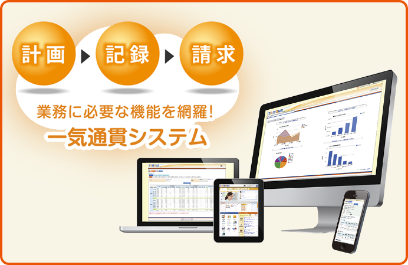
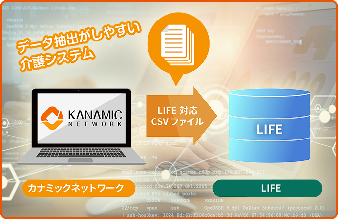
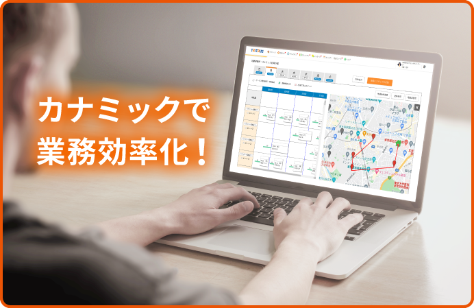

カナミックの介護ソフトが
選ばれる5つの理由
-
ほしい機能が詰まった
オールインワンのクラウドサービス計画書の作成やスケジュールから介護・看護記録、請求まで、すべての業務はPCやタブレット、スマートフォン上でいつでもどこでも、必要な時に業務が行えます。
平時はもちろん有事の時にも利用できるので、お客様の仕事を止めません。 -
科学的介護推進体制加算に
しっかり対応全ての事業者で取組みが必要となるLIFE（CHASE・VISIT）にも対応しています。
各種帳簿の電子化から提出用のデータ抽出までシステムがサポート。その他報酬改定、ICT化による加算要件にも対応できます。 -
QRコード入力だから簡単！
介護記録の効率化を実現二次元バーコードでご利用者情報をすぐに取得し、計画に対する実施記録が簡単に行えます。
ひとり当たり約30時間/月の業務削減実績があります。特定事業所加算にも対応。
-
情報共有・多職種間連携が
スマートにできるご利用者情報や記録などはリアルタイムに事業所内や多職種間で共有することができます。
テレビ会議機能を使って遠隔でチームカンファレンスも可能です。
-
バックオフィス業務の
DX化をサポート請求管理の煩雑な売上・売掛金や返戻再請求の自動処理・自動消込が可能です。
「カナミックかんたんWeb明細」による請求書・領収書のWeb発行照会や封入封緘郵送代行BPOサービスに加え、「カナミックかんたん電子決済」で決済業務も効率化できます。
また、AIが最適な訪問経路・タイムスケジュールを作成する「カナミックかんたんAI訪問ルート」により、業務全体の効率化と稼働率向上を実現します。